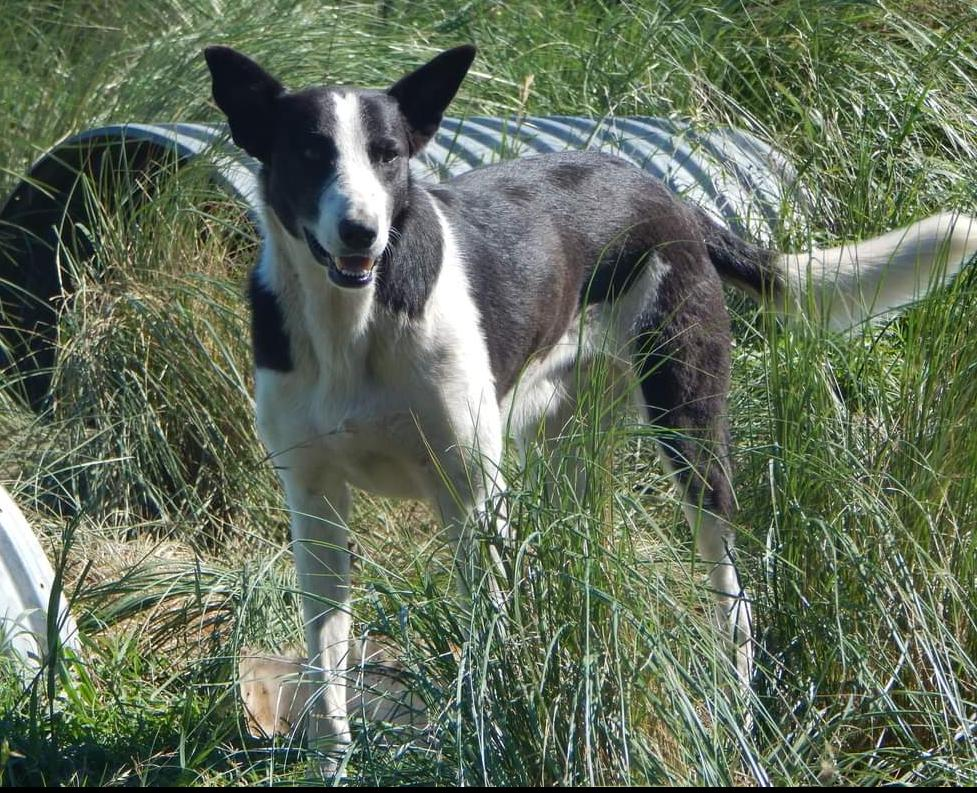

Alejo
¡Conoce a Alejo, un perro adulto de 5 años que busca de un hogar amoroso!
Este noble perro ha tenido experiencias pasadas que han forjado su carácter y, a pesar de eso, se mantiene abierto y receptivo a recibir amor y cuidado. Alejo anhela ser parte de un hogar cálido y cariñoso, donde pueda recibir la atención y dedicación que se merece. Como todo perro adulto, ya está más tranquilo y ha superado las etapas más activas de la juventud, por lo que será un compañero estable y equilibrado, aunque ama correr, asique es indispensable para él que cuenten con un patio espacioso, así puede gastar esa hermosa energia que lo rodea todos los días.